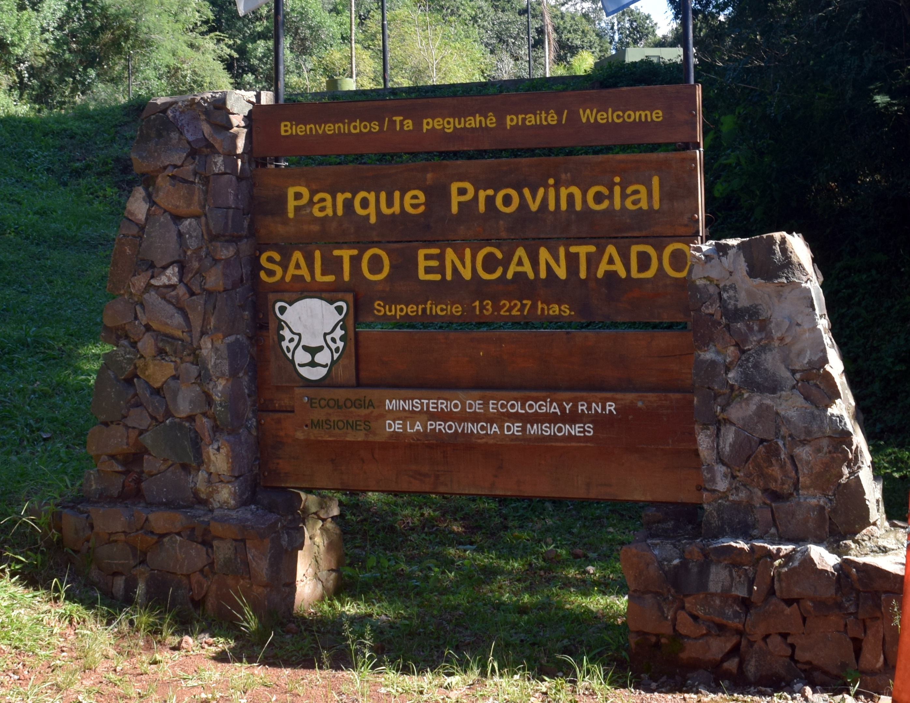
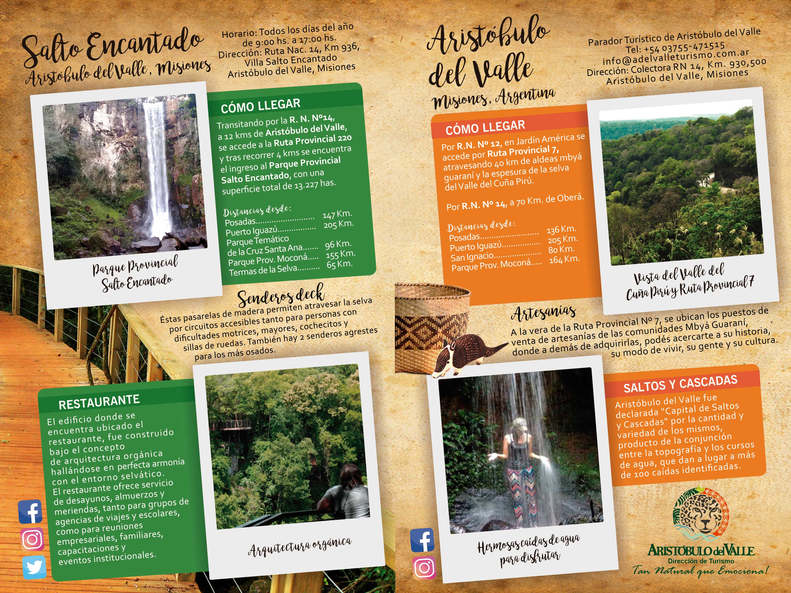

Salto Encantado

El Salto Encantado es un complejo turístico ubicado en el Municipio de Salto Encantado, Salto Encantado, en el departamento misionero de Cainguás. Se encuentra dentro del Parque provincial Salto Encantado del Valle del Arroyo Cuñá Pirú, un área protegida de 13.227 hectáreas.
Con una superficie total de 13.227 hectáreas de Área Natural Protegida, el arroyo Cuña Pirú (“mujer flaca”, en guaraní) hace su recorrido entre la vasta vegetación atravesando el parque.
El atractivo y pintoresco paisaje que ofrece, entre la variante de verdes y el recorrido de sus aguas cristalinas hacen de éste un lugar único.
En el corazón del Parque se encuentra el Salto Encantado, una caída de agua de 64 metros de altura que se precipita en un imponente paredón rocoso.
En su acceso encontrará puestos de ventas de artesanías, y dentro del parque servicio de informes, un drugstore con miradores y restaurante mimetizado con el ambiente.

¿Qué se puede hacer?
Sendero en deck de baja intensidad y agrestes: Salto Escondido y Acutí
Sendero agrestes de mayor dificultad: Salto la Olla y cascada El Picaflor
Descenso a la base de salto (375 escalones) Alta dificultad.
Balcón/terraza con puntos panorámicos
Avistaje de aves
Presencia de guardaparques.
Restaurant (desayuno, almuerzo y merienda- todos los días)
Adquisición de artesanías
Souvenirs